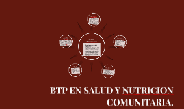

Bachillerato Tecnico Profesional en Salud y Nutricion.
El Bachiller Técnico en Salud y Nutricion se podrá desempeñar en:
Grupos de personas que viven en una zona geografica definida.
Organizaciones privadas de desarrollo.
Instituciones gubernamentales.
Programas de voluntariado para una comunidad.
Perfil del Egresado.
El egresado de la carrera de BTP en Salud y Nutricion Comunitaria, podra desempeñarse
en diversos campos relacionados como ser:
Atencion medica de primer nivel
Asesoria de una sana alimentacion
Jornadas de vacunacion voluntaria
Entre otros
Dias de clases en el IHER:
Martes.
Jueves.
Sabado.
Domingo.
Costos de BTP en Salud y Nutricion Comunitaria:
Libros:
I Semestre--------(L650.00)
II Semestre-------(L650.00)